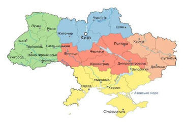

«Рослини України» |
||
|
«Людство живе в оточенні величезної кількості |
 |
«В українському фольклорі зустрічаються згадки про
величезну кількість рослин, багато з яких мають лікувальні властивості.
Проте лише деякі з них здобули особливу любовь українського народу та
стали символічними для національної культури українців. Лікарських
рослин, які використовують у народній і професійній |